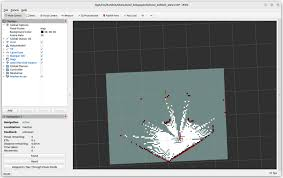
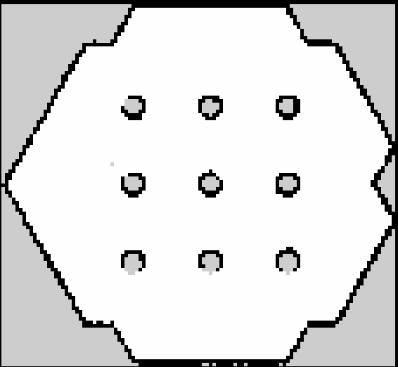

Mapping & SLAM
Overview
Mapping and SLAM (Simultaneous Localization and Mapping) enable Titan Robot to understand and navigate unknown environments.
This section explains how to create maps using SLAM Toolbox, how mapping works internally, and best practices for generating high-quality maps.
Titan Robot performs 2D LIDAR-based SLAM using wheel odometry and laser scan data.
SLAM Concepts
What is SLAM?
SLAM allows a robot to: - Build a map of an unknown environment - Estimate its own position within that map at the same time
Titan Robot uses: - Laser scans from the 2D LIDAR - Odometry from wheel encoders
These inputs are fused by SLAM Toolbox to continuously update the map.
Inputs Used for SLAM
| Input | Source |
|---|---|
| Laser scans | 2D LIDAR (/scan) |
| Odometry | ESP32 encoder-based odometry (/odom) |
| TF | Robot frame transforms |
SLAM Toolbox Overview
SLAM Toolbox is the primary SLAM solution used on Titan Robot.
It supports: - Online asynchronous mapping - Map serialization - Localization mode using saved maps
SLAM Toolbox is preferred due to: - Robust loop closure - ROS 2 native support - Efficient performance on embedded computers
Starting Mapping Mode
Launch Required Components
Ensure the robot is powered on and bringup is running:
ros2 launch titan_bringup titan_bringup.launch.py
Launch SLAM Toolbox (Mapping Mode)
In a new terminal:
ros2 launch slam_toolbox online_async_launch.py
This starts SLAM Toolbox in online mapping mode.
Visualizing the Map in RViz2
In RViz2:
- Set Fixed Frame to
map - Add the following displays:
- Map
- LaserScan
- TF
- RobotModel
You should see the map being generated in real time as the robot moves.

Exploring the Environment
Use keyboard teleoperation to explore:
ros2 run teleop_twist_keyboard teleop_twist_keyboard
Mapping Tips
- Move slowly and smoothly
- Avoid rapid rotations
- Ensure overlap between scans
- Cover all reachable areas
- Avoid bumping into obstacles
Good exploration significantly improves map quality.
Saving the Map
Once mapping is complete, save the map using RViz2:
- In RViz2, click Panels → Add New Panel
- Select SlamToolboxPlugin
- Click Save Map
- Choose a directory and map name
This generates:
- <map_name>.yaml
- <map_name>.pgm

Map Files Explained
- PGM file – Occupancy grid image
- YAML file – Metadata describing:
- Resolution
- Origin
- Map image path
Both files are required for localization and navigation.
Common Mapping Issues
| Issue | Possible Cause | Recommended Solution |
|---|---|---|
| Map drift over time | Inaccurate wheel odometry | Calibrate wheel encoders and odometry parameters |
| Wheel slip on smooth surfaces | Reduce speed and improve wheel traction | |
| Fast or abrupt robot motion | Move slowly and avoid sudden turns | |
| Poor map quality | Incomplete environment coverage | Ensure full exploration of the area |
| Rapid rotations | Rotate slowly to maintain scan alignment | |
| Sensor noise or vibration | Secure LIDAR mounting and reduce vibration | |
| No map visible in RViz | Incorrect fixed frame | Set RViz fixed frame to map |
| SLAM Toolbox not running | Verify SLAM node is active | |
| Broken or distorted walls | Odometry error accumulation | Improve encoder resolution and tuning |
| Inconsistent scan overlap | Maintain steady movement with good scan overlap | |
| Loop closure failure | Insufficient environmental features | Map areas with distinctive geometry |
| Poor revisit alignment | Revisit locations slowly and from similar angles |
Performance Considerations
- Mapping performance depends on:
- LIDAR scan rate
- Odometry accuracy
- CPU load
- Close unnecessary applications during mapping
- Avoid running heavy perception pipelines simultaneously
When to Remap
You should create a new map if: - Environment layout changes significantly - LIDAR mounting position changes - Wheel parameters are updated - Odometry calibration is modified
You have now successfully created a map using Titan Robot 🚀